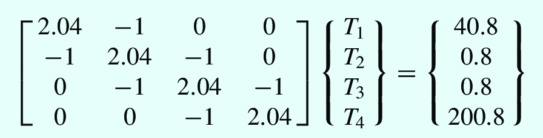
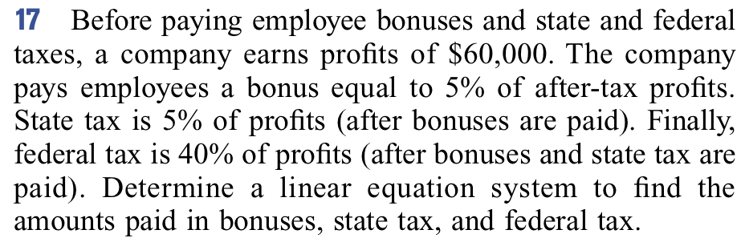

Linear Systems : Matrices, Vectors, eigen systems#
In this module we will learn how to solve linear systems which are very common in engineering. Applications are numerous:
Civil, chemical, electrical, mechanical, …, engineering
In biology by using linear algebra to analyze huge data sets regarding protein folding. https://math.stackexchange.com/questions/571109/any-application-of-vector-spaces-in-biology-or-biotechnology
In genetics to model the evolution of genes.
Markov chains on industrial processes with applications of matrices and eigen systems.
Population dynamics.
Perception of colors.
Adjacency graphs: https://en.wikipedia.org/wiki/Adjacency_matrix , https://towardsdatascience.com/matrices-are-graphs-c9034f79cfd8
Other applications: https://www.youtube.com/watch?v=X0HXnHKPXSo
Matrix operations visualized: https://pytorch.org/blog/inside-the-matrix/ , https://bhosmer.github.io/mm/ref.html
Matrix and robots: https://www.youtube.com/watch?v=1hG9dx600i8
Tips about matrix computing:
https://nhigham.com/2022/10/11/seven-sins-of-numerical-linear-algebra/
http://gregorygundersen.com/blog/2020/12/09/matrix-inversion/
Quanta magazine: https://www.youtube.com/watch?v=fDAPJ7rvcUw
{kind=link}
{kind=link}
Ejemplos de rotaciones:
https://www.glowscript.org/#/user/GlowScriptDemos/folder/Examples/program/Bounce-VPython
https://www.glowscript.org/#/user/GlowScriptDemos/folder/Examples/program/Plot3D

Write this as a linear system \(A\vec x = \vec b\), with unknows \(x_1, x_2, x_3\)
A = (k1+k2 -k2 0 -k2 k2+k3 -k3 0 -k3 k3)
[[k1 + k2, -k2 , 0 ],
[-k2 , k2+k3, -k3],
[0 , -k3 , k3]]
x = (x1 x2 x3)
b = (m1g m2g m3g)
How to index a Matrix? NOTE: Python indexes start at 0#
For a discussion about starting at zero see: https://news.ycombinator.com/item?id=32581721
{kind=link}
Defining matrices in python#
Scipy#
See https://docs.scipy.org/doc/numpy-1.17.0/reference/generated/numpy.array.html#numpy.array
import numpy as np
A = np.array([[1, 2], # primera fila, indice es 0
[3, 4]]) # Segunda fila, indice es 1
print(A[0][1])
print(f"Matrix : \n", A)
#
A = np.array([1, 2, 3, 4]).reshape(2,2)
print("Matrix : \n", A)
print("A[1,0] : \n", A[1,0])
print("A[1][0] : \n", A[1][0])
print("A[:,-1] : \n", A[:,-1])
2
Matrix :
[[1 2]
[3 4]]
Matrix :
[[1 2]
[3 4]]
A[1,0] :
3
A[1][0] :
3
A[:,-1] :
[2 4]
Matrix operations#
Add, substract, multiply, etc
import numpy as np
a = np.array([[1, 2],[3, 4]])
b = np.array([[5, -1], [-3, 24]])
c = a+b # sum
print(c)
c = a*b # Multiplication
print(c)
c = a/b # divide element by element
print(c)
print(c.max())
print(c.min())
print(b/b)
[[ 6 1]
[ 0 28]]
[[ 5 -2]
[-9 96]]
[[ 0.2 -2. ]
[-1. 0.16666667]]
0.2
-2.0
[[1. 1.]
[1. 1.]]
Solving linear systems \(A\vec x= \vec b\)#
{kind=link}
import numpy as np
A = np.array([[150, -100, 0],
[-100, 150, -50],
[0, -50, 50]])
b = np.array([588.6, 686.7, 784.8])
x = np.linalg.solve(A, b) # magic
print("Solution: \n", x)
# confirm
print("Delta:\n", A.dot(x) - b)
Solution:
[41.202 55.917 71.613]
Delta:
[-1.13686838e-13 1.25055521e-12 1.13686838e-13]
import numpy as np
#np.random.seed(10) # Play with this value
N = 1000
A = np.random.rand(N,N)
b = np.random.rand(N)
x = np.linalg.solve(A, b) # magic
print("Solution: \n", x[:10])
# confirm
#print("Delta:\n", A.dot(x) - b)
Solution:
[-0.91643099 0.33865878 -3.56965545 1.53919415 -0.60407764 2.10245494
-1.67343036 -3.30981441 2.14674567 -1.16095201]
Exercise: Rewrite and solve the following system#

# YOUR CODE HERE
raise NotImplementedError()
---------------------------------------------------------------------------
NotImplementedError Traceback (most recent call last)
Cell In[5], line 2
1 # YOUR CODE HERE
----> 2 raise NotImplementedError()
NotImplementedError:
assert np.all(np.isclose(x, np.array([-17.01923077, -9.61538462, -1.53846154])))
Exercise: Rewrite and solve the following system#
Extra: Can yu measure the time spent in the computation? (google for timer or timeit in python)
{kind=link}
# YOUR CODE HERE
raise NotImplementedError()
assert np.all(np.isclose(x, np.array([ 6.15384615, -4.61538462, -1.53846154, -6.15384615, -1.53846154, -1.53846154])))
Exercise: Solve and plot the following system#
Plot the system of equations and check whether this solution is or
not special. Compute the quantity np.linalg.cond
# YOUR CODE HERE
raise NotImplementedError()
Exercise: Simulating temperature#
Temperature discretized

System of equations 
{kind=link}
# YOUR CODE HERE
raise NotImplementedError()
Exercise#
How does the computing time grows with the matrix size?
# YOUR CODE HERE
raise NotImplementedError()
Computing inverse matrices#
See : https://docs.scipy.org/doc/scipy/reference/generated/scipy.linalg.inv.html#scipy.linalg.inv
You can watch: https://www.youtube.com/watch?v=uQhTuRlWMxw
%time
from scipy import linalg
import numpy as np
A = np.array([[1., 2.],
[3., 4.]])
B = linalg.inv(A) # magic
#print("B : \n", B)
# verify
#print("A A^-1 : \n", A.dot(B))
%%time
from scipy import linalg
import numpy as np
N = 1000
A = np.random.rand(N, N)
B = linalg.inv(A) # magic
#print("B : \n", B)
# verify
#print("A A^-1 : \n", A.dot(B))
The condition number#
The number $\(\kappa = ||A|| ||A^{-1}||\)\( is called the condition number of a matrix. Ideally it is \)1\(. If \)\kappa$ is much larger than one, the matrix is ill-conditioned and the solution might have a lot of error.
Compute the condition number of the following matrix:
Plot the associate system to check for the result
from scipy import linalg
import numpy as np
A = np.array([[1.001, 0.001],
[0.000, 0.999]])
kappa = linalg.norm(A)*linalg.norm(linalg.inv(A))
print(f"{kappa = }")
Exercise#
How does the computing time grows with the matrix size?
from scipy import linalg
import numpy as np
import time # use time.process_time_ns() , compare with monotonic_ns()
MINSIZE=1
MAXSIZE=5000
NSAMPLES=10
data = np.zeros((NSAMPLES, 3))
# YOUR CODE HERE
raise NotImplementedError()
# YOUR CODE HERE
raise NotImplementedError()
# For profiling, check https://stackoverflow.com/questions/44734297/how-to-profile-python-3-5-code-line-by-line-in-jupyter-notebook-5
!pip install py-heat-magic
%load_ext heat
#%%heat
# YOUR CODE HERE
raise NotImplementedError()
Improve this by taking at least 10 time samples per matrix size and computing the statistics
Eigen values and eigen vectors#
The eigen-values \({\lambda_i}\) and eigen-vectors \({x}\) of a matrix satisfy the equation
The eigen-vectors form a basis where the matrix can be diagonalized. In general, computing the eigen vectors and aeigenvalues is hard, and they can also be complex.
For a more visual introduction watch: https://www.youtube.com/watch?v=PFDu9oVAE-g
 REF: https://www.reddit.com/r/math/comments/b7ou6t/3blue1brown_overview_of_differential_equations/
REF: https://www.reddit.com/r/math/comments/b7ou6t/3blue1brown_overview_of_differential_equations/# See : https://docs.scipy.org/doc/scipy/reference/generated/scipy.linalg.eig.html#scipy.linalg.eig
import numpy as np
from scipy import linalg
#A = np.array([[0., -1.], [1., 0.]])
#A = np.array([[1, 0.], [0., 2.]])
A = np.array([[2, 5, 8, 7], [5, 2, 2, 8], [7, 5, 6, 6], [5, 4, 4, 8]])
sol = linalg.eig(A) # magic
print("Eigen-values: ", sol[0])
print("Eigen-vectors:\n", sol[1])
# verify
print("Verification: ", A.dot(sol[1][:, 0]) - sol[0][0]*sol[1][:, 0])
Exercise#
Find the eigen-values and eigen-vectors for the following system
{kind=link}
# YOUR CODE HERE
raise NotImplementedError()
Exercise#
How does the computing time grows with the matrix size?
# YOUR CODE HERE
raise NotImplementedError()
# YOUR CODE HERE
raise NotImplementedError()
Problems#
Linear System#
{kind=link}
# YOUR CODE HERE
raise NotImplementedError()
Rotation matrix#
Let \(\vec x = (a, b)\) be a two-dimensional vector. Write a matrix that rotates the vector by 90 degrees. Use matrix multiplication to check your results.
# YOUR CODE HERE
raise NotImplementedError()
Thick lens (Boas, 3.15.9)#
The next matrix is used when discussing a thick lens in air
where \(d\) is the thickness of the lens, \(n\) is the refraction index, and \(R_1\) and \(R_2\) are the curvature radius. Element \(A_{12}\) is equal to \(-1/f\), where \(f\) is the focal distance. Evaluate \(\det A\) and \(1/f\) as functions of \(n \in [1, 3]\).
# YOUR CODE HERE
raise NotImplementedError()
System of reactors#
{kind=link}
{kind=link}
# YOUR CODE HERE
raise NotImplementedError()
Products production#
{kind=link}
# YOUR CODE HERE
raise NotImplementedError()
Teaching distribution#

# YOUR CODE HERE
raise NotImplementedError()
GPA#
{kind=link}
{kind=link}
# YOUR CODE HERE
raise NotImplementedError()
Payments#
{kind=link}
# YOUR CODE HERE
raise NotImplementedError()